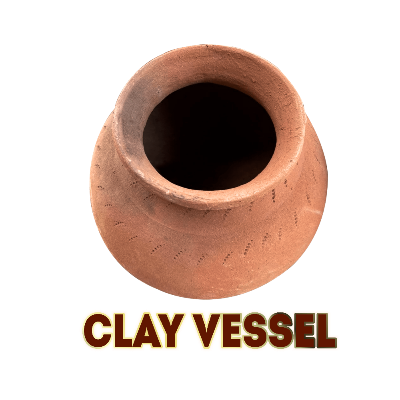

Clay Vessel

The jugs must be made of local clay with mixed with ground, sieved sawdust or other combustible material. When the pots are fired, the clay incorporates the sawdust (or corn or rice husks). It remains porous, but its micro-texture blocks contaminants in the water filtering through and dripping downward into the storage vessel.Still, some pathogens are small enough to pass through the clay pores. To remove deadly micro-organisms and prevent mold from growing inside the filters, a layer of colloidal silver is applied to their interiors. Tests prove that these colloidal silver-coated jugs eliminate 99.88% of toxins found in raw water. Introducing copper to the jug, instead of silver, has also proved to be effective.
What does clay vessel remove:
What doesn’t clay vessel remove:
- Lead
- Debris
- Nitrates
- Pesticides
Advantages of Clay vessel:
- Simplicity of use and acceptability.
- Proven reduction of diarrheal disease incidence for users.
- Long life if the filter remains unbroken
- A low one-time cost
జగ్లను తప్పనిసరిగా స్థానిక మట్టితో, జల్లెడ సాడస్ట్ లేదా ఇతర మండే పదార్థాలతో కలిపి తయారు చేయాలి. కుండలను కాల్చినప్పుడు, మట్టిలో సాడస్ట్ (లేదా మొక్కజొన్న లేదా వరి పొట్టు) కలుపుతారు. ఇది పోరస్గా మిగిలిపోయింది, అయితే దాని సూక్ష్మ-ఆకృతి నీటిలోని కలుషితాలను ఫిల్టర్ చేసి నిల్వ పాత్రలోకి క్రిందికి కారుతుంది.ఇప్పటికీ, కొన్ని వ్యాధికారకాలు మట్టి రంధ్రాల గుండా వెళ్ళేంత చిన్నవిగా ఉంటాయి. ప్రాణాంతక సూక్ష్మజీవులను తొలగించడానికి మరియు ఫిల్టర్ల లోపల అచ్చు పెరగకుండా నిరోధించడానికి, వాటి లోపలి భాగాలకు ఘర్షణ వెండి పొరను పూయాలి. ఈ ఘర్షణ వెండి పూతతో కూడిన జగ్లు మడి నీటిలో కనిపించే 99.88% విషాన్ని తొలగిస్తాయని పరీక్షలు రుజువు చేస్తాయి.జగ్లో వెండికి బదులుగా రాగిని ప్రవేశపెట్టడం కూడా ప్రభావవంతంగా నిరూపించబడింది.
మట్టి పాత్ర ఏమి తొలగిస్తుంది:
- బ్యాక్టీరియా
- వైరస్లు
- ప్రోటోజోవ
మట్టి పాత్ర ఏమి తీసివేయదు:
- సీసం
- శిధిలాలు
- నైట్రేట్లు
- పురుగుమందులు
మట్టి పాత్ర యొక్క ప్రయోజనాలు:
- వాడుకలో సరళత మరియు ఆమోదయోగ్యత.
- వినియోగదారులకు అతిసార వ్యాధి సంభవం యొక్క నిరూపితమైన తగ్గింపు.
- ఫిల్టర్ పగలకుండా ఉంటే లాంగ్ లైఫ్.
-
తక్కువ ఒక సారి ఖర్చు.